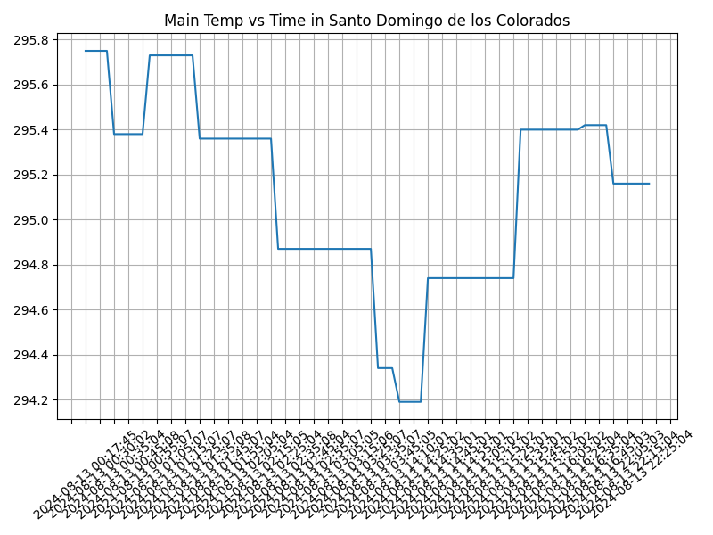

Proyecto ICCD332 Arquitectura de Computadores
Índice
1. City Weather APP
Este es el proyecto de fin de semestre en donde se pretende demostrar las destrezas obtenidas durante el transcurso de la asignatura de Arquitectura de Computadores.
- Conocimientos de sistema operativo Linux
- Conocimientos de Emacs/Jupyter
- Configuración de Entorno para Data Science con Mamba/Anaconda
- Literate Programming
1.1. Estructura del proyecto
Se ha creado la carpeta home/anndy19/CityWeather para almacenar el proyecto. El proyecto ha de tener los siguientes archivos y subdirectorios:
#cd /home/anndy19/CityWeather pwd
/home/anndy19/CityWeather/weather-site/content
El proyecto ha de tener los siguientes archivos y subdirectorios. Adaptar los nombres de los archivos según las ciudades específicas del grupo.
.
├── build-site.el
├── build-site.el~
├── build.sh
├── build.sh~
├── content
│ ├── #index.org#
│ ├── images
│ └── index.org
└── public
├── images
├── index.html
└── index.html~
1.2. Descripción del Código
1.3. Script `main.py`
El script `main.py` consulta la API de OpenWeatherMap y guarda los datos en `clima-santo-domingo-hoy.csv`. A continuación, se muestra el código del script:
import requests import csv from datetime import datetime, timezone # Configuración API_KEY = 'tu_api_key_aquí' LATITUDE = -0.25 LONGITUDE = -79.15 FILE_NAME = '/home/anndy19/CityWeather/clima-STD-hoy.csv' def get_weather(lat, lon, api): URL = f'http://api.openweathermap.org/data/2.5/weather?lat={lat}&lon={lon}&appid={api}' response = requests.get(URL) return response.json() def process(json): weather_data = { 'datetime': datetime.now(timezone.utc).strftime('%Y-%m-%d %H:%M:%S'), 'coord_lon': json.get('coord', {}).get('lon', 'N/A'), 'coord_lat': json.get('coord', {}).get('lat', 'N/A'), 'weather_id': json.get('weather', [{}])[0].get('id', 'N/A'), 'weather_main': json.get('weather', [{}])[0].get('main', 'N/A'), 'weather_description': json.get('weather', [{}])[0].get('description', 'N/A'), 'weather_icon': json.get('weather', [{}])[0].get('icon', 'N/A'), 'base': json.get('base', 'N/A'), 'main_temp': json.get('main', {}).get('temp', 'N/A'), 'main_feels_like': json.get('main', {}).get('feels_like', 'N/A'), 'main_temp_min': json.get('main', {}).get('temp_min', 'N/A'), 'main_temp_max': json.get('main', {}).get('temp_max', 'N/A'), 'main_pressure': json.get('main', {}).get('pressure', 'N/A'), 'main_humidity': json.get('main', {}).get('humidity', 'N/A'), 'main_sea_level': json.get('main', {}).get('sea_level', 'N/A'), 'main_grnd_level': json.get('main', {}).get('grnd_level', 'N/A'), 'visibility': json.get('visibility', 'N/A'), 'wind_speed': json.get('wind', {}).get('speed', 'N/A'), 'wind_deg': json.get('wind', {}).get('deg', 'N/A'), 'wind_gust': json.get('wind', {}).get('gust', 'N/A'), 'clouds_all': json.get('clouds', {}).get('all', 'N/A'), 'sys_type': json.get('sys', {}).get('type', 'N/A'), 'sys_id': json.get('sys', {}).get('id', 'N/A'), 'sys_country': json.get('sys', {}).get('country', 'N/A'), 'sys_sunrise': json.get('sys', {}).get('sunrise', 'N/A'), 'sys_sunset': json.get('sys', {}).get('sunset', 'N/A'), 'timezone': json.get('timezone', 'N/A'), 'id': json.get('id', 'N/A'), 'name': json.get('name', 'N/A'), 'cod': json.get('cod', 'N/A') } return weather_data def write2csv(data, csv_filename): with open(csv_filename, mode='a', newline='') as file: writer = csv.writer(file) # Escribo la cabecera si el archivo está vacío if file.tell() == 0: writer.writerow([ 'datetime', 'coord_lon', 'coord_lat', 'weather_id', 'weather_main', 'weather_description', 'weather_icon', 'base', 'main_temp', 'main_feels_like', 'main_temp_min', 'main_temp_max', 'main_pressure', 'main_humidity', 'main_sea_level', 'main_grnd_level', 'visibility', 'wind_speed', 'wind_deg', 'wind_gust', 'clouds_all', 'sys_type', 'sys_id', 'sys_country', 'sys_sunrise', 'sys_sunset', 'timezone', 'id', 'name', 'cod' ]) writer.writerow([ data.get('datetime'), data.get('coord_lon'), data.get('coord_lat'), data.get('weather_id'), data.get('weather_main'), data.get('weather_description'), data.get('weather_icon'), data.get('base'), data.get('main_temp'), data.get('main_feels_like'), data.get('main_temp_min'), data.get('main_temp_max'), data.get('main_pressure'), data.get('main_humidity'), data.get('main_sea_level'), data.get('main_grnd_level'), data.get('visibility'), data.get('wind_speed'), data.get('wind_deg'), data.get('wind_gust'), data.get('clouds_all'), data.get('sys_type'), data.get('sys_id'), data.get('sys_country'), data.get('sys_sunrise'), data.get('sys_sunset'), data.get('timezone'), data.get('id'), data.get('name'), data.get('cod') ]) def main(): print("===== Bienvenido a Santo Domingo Weather =====") weather_data = get_weather(lat=LATITUDE, lon=LONGITUDE, api=API_KEY) if weather_data.get('cod') != 404: processed_data = process(weather_data) write2csv(processed_data, FILE_NAME) else: print("Ciudad no disponible o API KEY no válida") if __name__ == '__main__': main()
which sh
/usr/bin/sh
which mamba
/home/anndy19/miniforge3/condabin/mamba
#!/usr/bin/sh source /home/anndy19/miniforge3/etc/profile.d/conda.sh eval "$(conda shell.bash hook)" conda activate iccd332 python main.py
1.4. Script `get-weather.sh`
Este script ejecuta `main.py` y está configurado para ejecutarse cada 5 minutos a través de cron.
1.5. Configuración de Crontab
Se ha configurado crontab para ejecutar `get-weather.sh` cada 5 minutos y guardar la salida en `output.log`.
*/5 * * * * cd /home/anndy19/CityWeather && ./get-weather.sh >> output.log 2>&1
1.6. Muestra Aleatoria de datos
Se muestra un ejemplo de los primeros 10 valores obtenidos por el script:
import os import pandas as pd #Lectura del archivo csv obtenido df = pd.read_csv('/home/anndy19/CityWeather/clima-STD-hoy.csv') #se imprime la estructura del dataframe print(df.shape)
# print(df.shape) table1 = df.sample(10) table = [list(table1)]+[None]+table1.values.tolist()
| datetime | coordlon | coordlat | weatherid | weathermain | weatherdescription | weathericon | base | maintemp | mainfeelslike | maintempmin | maintempmax | mainpressure | mainhumidity | mainsealevel | maingrndlevel | visibility | windspeed | winddeg | windgust | cloudsall | systype | sysid | syscountry | syssunrise | syssunset | timezone | id | name | cod |
|---|---|---|---|---|---|---|---|---|---|---|---|---|---|---|---|---|---|---|---|---|---|---|---|---|---|---|---|---|---|
| 2024-08-13 03:45:05 | -79.15 | -0.25 | 804 | Clouds | overcast clouds | 04n | stations | 294.34 | 294.97 | 294.34 | 294.34 | 1014 | 94 | 1014 | 948 | 10000 | 0.69 | 328 | 1.32 | 96 | nan | nan | EC | 1723461508 | 1723505089 | -18000 | 3651297 | Santo Domingo de los Colorados | 200 |
| 2024-08-13 02:15:05 | -79.15 | -0.25 | 804 | Clouds | overcast clouds | 04n | stations | 295.36 | 295.96 | 295.36 | 295.36 | 1013 | 89 | 1013 | 947 | 10000 | 0.17 | 25 | 0.96 | 96 | nan | nan | EC | 1723461508 | 1723505089 | -18000 | 3651297 | Santo Domingo de los Colorados | 200 |
| 2024-08-13 03:55:02 | -79.15 | -0.25 | 804 | Clouds | overcast clouds | 04n | stations | 294.34 | 294.97 | 294.34 | 294.34 | 1014 | 94 | 1014 | 948 | 10000 | 0.69 | 328 | 1.32 | 96 | nan | nan | EC | 1723461508 | 1723505089 | -18000 | 3651297 | Santo Domingo de los Colorados | 200 |
| 2024-08-13 00:45:08 | -79.15 | -0.25 | 500 | Rain | light rain | 10n | stations | 295.38 | 296.01 | 295.38 | 295.38 | 1012 | 90 | 1012 | 947 | 10000 | 0.37 | 121 | 0.42 | 91 | nan | nan | EC | 1723461508 | 1723505089 | -18000 | 3651297 | Santo Domingo de los Colorados | 200 |
| 2024-08-13 02:00:07 | -79.15 | -0.25 | 804 | Clouds | overcast clouds | 04n | stations | 295.36 | 295.96 | 295.36 | 295.36 | 1013 | 89 | 1013 | 947 | 10000 | 0.17 | 25 | 0.96 | 96 | nan | nan | EC | 1723461508 | 1723505089 | -18000 | 3651297 | Santo Domingo de los Colorados | 200 |
| 2024-08-13 15:15:02 | -79.15 | -0.25 | 500 | Rain | light rain | 10d | stations | 294.74 | 295.36 | 294.74 | 294.74 | 1014 | 92 | 1014 | 949 | 9591 | 1.0 | 254 | 1.52 | 100 | nan | nan | EC | 1723547898 | 1723591479 | -18000 | 3651297 | Santo Domingo de los Colorados | 200 |
| 2024-08-13 00:30:02 | -79.15 | -0.25 | 500 | Rain | light rain | 10n | stations | 295.75 | 296.36 | 295.75 | 295.75 | 1011 | 88 | 1011 | 946 | 10000 | 0.16 | 210 | 0.3 | 85 | nan | nan | EC | 1723461508 | 1723505089 | -18000 | 3651297 | Santo Domingo de los Colorados | 200 |
| 2024-08-13 15:25:01 | -79.15 | -0.25 | 500 | Rain | light rain | 10d | stations | 294.74 | 295.36 | 294.74 | 294.74 | 1014 | 92 | 1014 | 949 | 9591 | 1.0 | 254 | 1.52 | 100 | nan | nan | EC | 1723547898 | 1723591479 | -18000 | 3651297 | Santo Domingo de los Colorados | 200 |
| 2024-08-13 00:18:32 | -79.15 | -0.25 | 500 | Rain | light rain | 10n | stations | 295.75 | 296.36 | 295.75 | 295.75 | 1011 | 88 | 1011 | 946 | 10000 | 0.16 | 210 | 0.3 | 85 | nan | nan | EC | 1723461508 | 1723505089 | -18000 | 3651297 | Santo Domingo de los Colorados | 200 |
| 2024-08-13 02:55:07 | -79.15 | -0.25 | 804 | Clouds | overcast clouds | 04n | stations | 294.87 | 295.47 | 294.87 | 294.87 | 1013 | 91 | 1013 | 948 | 10000 | 0.1 | 324 | 0.99 | 95 | nan | nan | EC | 1723461508 | 1723505089 | -18000 | 3651297 | Santo Domingo de los Colorados | 200 |
1.7. Grafica Temperatura vs Tiempo
Realizar una gráfica de la Temperatura en el tiempo.
El siguiente cógido permite hacer la gráfica de la temperatura vs
tiempo para Org 9.7+. Para saber que versión dispone puede ejecutar
M-x org-version
import matplotlib.pyplot as plt import matplotlib.dates as mdates # Define el tamaño de la figura de salida fig = plt.figure(figsize=(8,6)) plt.plot(df['datetime'], df['main_temp']) # dibuja las variables dt y temperatura # ajuste para presentacion de fechas en la imagen plt.gca().xaxis.set_major_locator(mdates.DayLocator(interval=2)) #plt.gca().xaxis.set_major_formatter(mdates.DateFormatter('%Y-%m-%d')) plt.grid() # Titulo que obtiene el nombre de la ciudad del DataFrame plt.title(f'Main Temp vs Time in {next(iter(set(df.name)))}') plt.xticks(rotation=40) # rotación de las etiquetas 40° fig.tight_layout() fname = './images/temperature.png' plt.savefig(fname) fname
None 
Debido a que el archivo index.org se abre dentro de la carpeta
content, y en cambio el servidor http de emacs se ejecuta desde la
carpeta public es necesario copiar el archivo a la ubicación
equivalente en /public/images
cp -rfv ./images/* /home/anndy19/CityWeather/weather-site/public/images
import matplotlib.pyplot as plt import matplotlib.dates as mdates # Supongamos que df es un DataFrame ya cargado con las columnas 'datetime' y 'humidity' #df = pd.read_csv('clima-STD-hoy.csv') # Carga tu DataFrame # Define el tamaño de la figura de salida fig = plt.figure(figsize=(8,6)) plt.plot(df['datetime'], df['main_humidity') # Ajusta según tus datos # Ajuste para presentación de fechas en la imagen plt.gca().xaxis.set_major_locator(mdates.DayLocator(interval=2)) plt.grid() # Título que obtiene el nombre de la ciudad del DataFrame plt.title(f'Humidity vs Time in {next(iter(set(df.name)))}') plt.xlabel('Time') plt.ylabel('Humidity (%)') plt.xticks(rotation=40) # Rotación de las etiquetas 40° fig.tight_layout() # Ruta de la imagen de salida fname = './images/humedity.png' plt.savefig(fname)
cp -rfv ./images/* /home/anndy19/CityWeather/weather-site/public/images